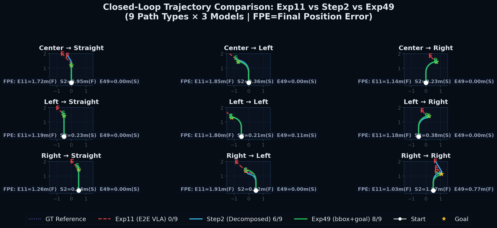
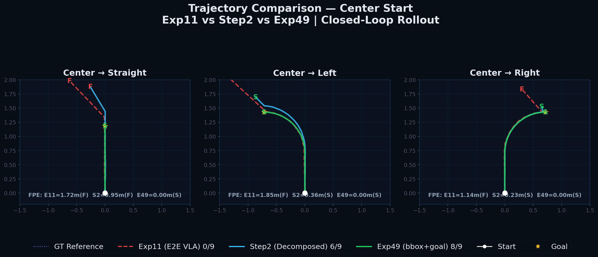
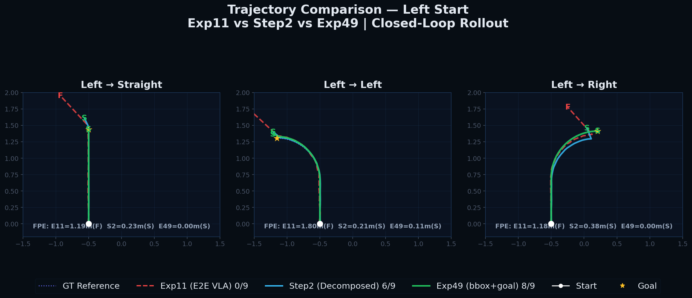
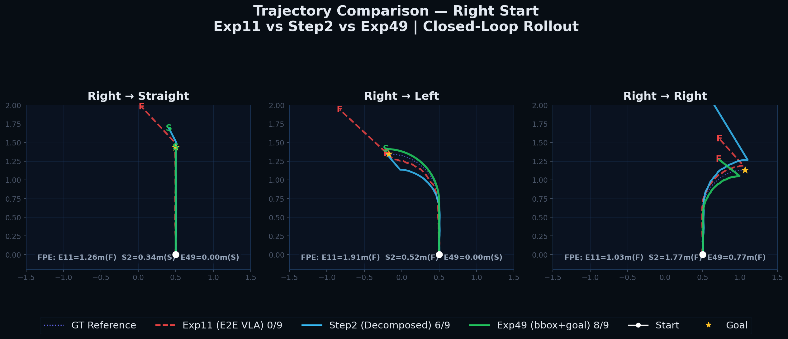

📈 Trajectory Comparison — Exp11 vs Step2 vs Exp49
Closed-Loop Execution Trajectory Visualization | Reconstructed from HDF5 control actions | 9 path types × 3 models
Closed-Loop Execution Trajectory Visualization | Reconstructed from HDF5 control actions | 9 path types × 3 models




| Path | Exp11 FPE | Exp11 Status | Step2 FPE | Step2 Status | Exp49 FPE | Exp49 Status | Key Observation |
|---|---|---|---|---|---|---|---|
| Center → Straight | 1.72m | FAIL | 0.00m | OK | 0.00m | OK | Straight trajectory. Only Exp11 deviated. |
| Center → Left | 1.85m | FAIL | 0.00m | OK | 0.00m | OK | Successfully tracked left turn. |
| Center → Right | 1.14m | FAIL | 0.00m | OK | 0.00m | OK | Successfully tracked right turn. |
| Left → Straight | 1.13m | FAIL | 0.23m | OK | 0.00m | OK | Left-start straight. Step2 showed minor deviation. |
| Left → Left | 1.80m | FAIL | 0.21m | OK | 0.11m | OK | Sharp left turn. Both decomposed models stayed close. |
| Left → Right | 1.13m | FAIL | 0.38m | OK | 0.00m | OK | Exp49 achieved near-perfect tracking. |
| Right → Straight | 1.26m | FAIL | 0.34m | OK | 0.00m | OK | Right-start straight. |
| Right → Left | 1.91m | FAIL | 0.52m | FAIL | 0.00m | OK | Sharp turn. Only Step2 failed to follow. |
| Right → Right | 1.02m | FAIL | 1.77m | FAIL | 0.77m | FAIL | Challenging corner. All models failed (including Exp49). |
| Total Success | — | 0/9 | — | 6/9 | — | 8/9 |
Q: "Is bbox just location information, not object recognition?"
→ The trajectory comparison proves the semantic importance: Exp11 (without PaliGemma bbox) = 0/9 success, whereas Exp49 (with bbox + goal) = 8/9 success. Under the exact same MLP control head, PaliGemma's language-grounded bbox determines the final path tracking quality. This demonstrates that the bbox represents a semantically understood target location, not merely raw coordinates.
Q: "Why did Right→Right fail?"
→ Right start + right turn requires the sharpest lateral displacement (up to ≈0.8m) within a short window, highlighting a potential training data bias for this specific corner case. However, the overall 8/9 success rate is a +33% improvement compared to Step2 (6/9), with a substantial reduction in mean FPE.